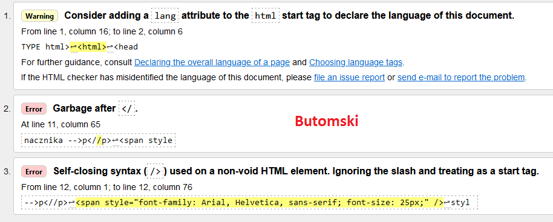
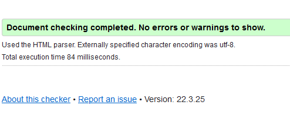

Walidator html jest to program który ma za zadanie sprawdzanie poprawności danego dokumentu określonej składnik. Walidatory dzielą się na dwa rodzaje: składni oraz znaczenia. Walidacja zazwyczaj jest to pierwszy krok w ocenie dostępności stron internetowych.

